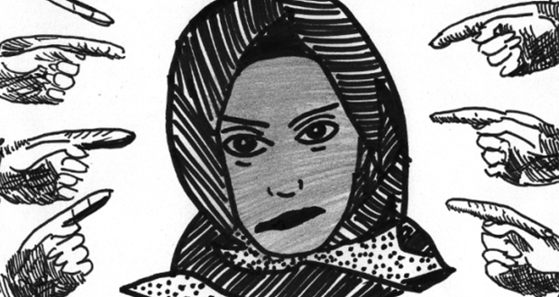
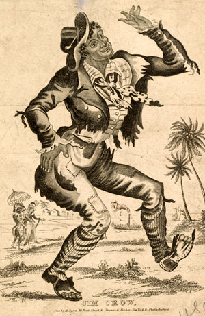
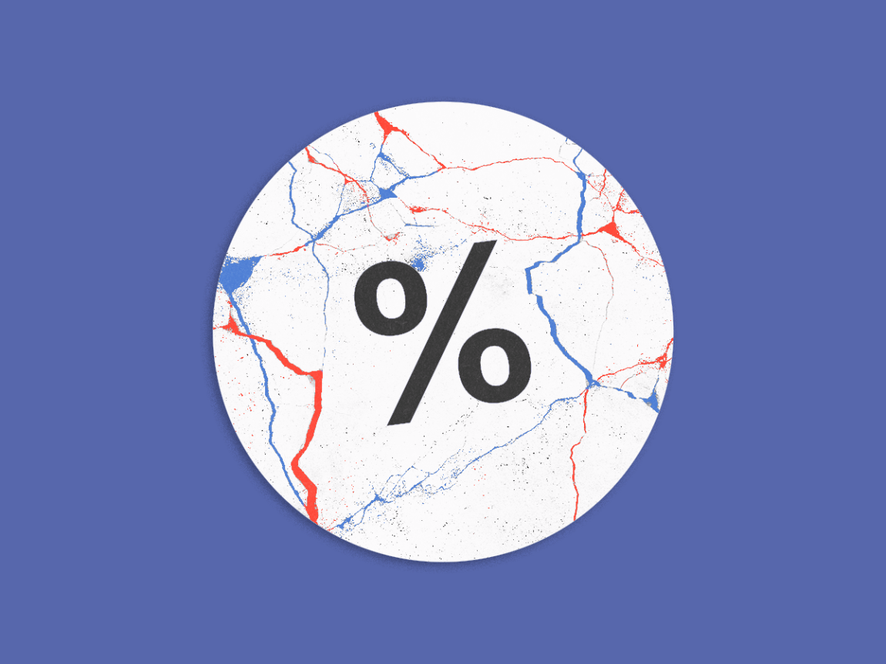

Provided below are useful resources of previous researches about the history of the US Election


1) Sexism, racism, and nationalism: Factors associated with the 2016 U.S. presidential election results?
Although it has been some 6 decades since the Voting Rights Act of 1965, marginalized communties are still facing institutionalized discrimination in elections of any form. In this paper, statistical analysis techniques are used to measure the impact of gender, racial, and nationalist discrimination in the 2016 election.
Shook, N. J. (2020, March 9). Sexism, racism, and nationalism: Factors associated with the 2016 U.S. presidential election results? https://journals.plos.org/plosone/article

2) How Grandfather Clauses Disenfranchised Black Voters in the U.S.
The Union's victory in the US Cival War marks the end of slavery, but the instituionalized discrimination towards African Americans still persist through an abundance of deliberately crafted laws. Discriminating policies are usually hidden for the common eye, but the conspicuousness of the Grandfather Clause is second to none. Nittle, in this article, dives into the establishment, affect, and ending of the notorious clause.
Nittle, N. N. (2020, October 8). How Grandfather Clauses Disenfranchised Black Voters in the U.S. ThoughtCo. https://www.thoughtco.com/grandfather-clauses-voting-rights-4570970

3) The Polls Weren’t Great. But That’s Pretty Normal.
Due to the vast increase in mail-in ballots, the Election Night of 2020 had turned into an election week. Nevertheless, tension had ensued as votes were counted disproportionately through the week, causing for legitimate concern for those anxiously waiting American. Biden ended up winning the popular vote by more than 7 million votes, but the polls suggested that Biden should have won the Electoral College vote by an even wider margin. In this article, Nate Silver dives into "what went wrong" in the 2020 election, and how it is statistically normal due to the nature of random sampling
Nate Silver, N. S. (2020, November 11). The Polls Weren’t Great. But That’s Pretty Normal. FiveThirtyEight.Com. https://fivethirtyeight.com/features/the-polls-werent-great-but-thats-pretty-normal/
4) Beyond Red vs. Blue: The Political Typology
Beyond Red vs. Blue: The Political Typology. (2014, June 26). Https://Www.Pewresearch.Org/. https://www.pewresearch.org/politics/2014/06/26/the-political-typology-beyond-red-vs-blue/